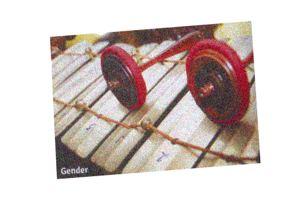
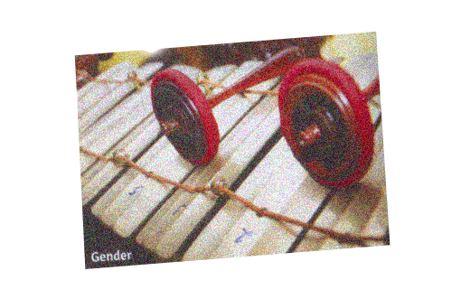

My second home, Jakarta. Now having the size of population as the fourth in the whole world, Jakarta is a mega city in the Southeast Asia. There are so many skyscrapers built one after another, yet there are many slums scattered throughout the city, too. Flooding in the rainy season, countless cars, traffic jam, heavenly taste of tropical fruits are all small moments that define Jakarta.
 
